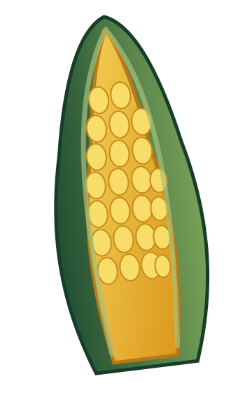

O começo de tudo
Preparo
O cuidado começa antes mesmo do plantio, com a preparação da área que receberá a nova produção.
Produzido em São José dos Campos
Milho verde não transgênico, produzido localmente e comercializado no atacado e varejo.

MILHO VERDE BOM POR NATUREZAMilho do Vale
O sabor começa na origem. Cuidamos de cada etapa para levar até você um milho fresco, bonito e com a qualidade que só a produção local consegue entregar.
Nossa origem
Começa muito antes da colheita. É no cuidado com a terra, no acompanhamento da lavoura e na escolha do momento certo que nasce a diferença.
Da primeira semente à sua mesa
Do campo para você. Conheça o caminho do nosso milho.
Preparo
O cuidado começa antes mesmo do plantio, com a preparação da área que receberá a nova produção.
Plantio
É aqui que uma nova safra começa.
Cultivo
Acompanhamos o desenvolvimento da lavoura até o milho atingir seu momento ideal.
Colheita
O milho é colhido no momento certo, preservando aquilo que mais importa: qualidade e frescor.
Seleção
Antes de chegar até você, o milho passa pela seleção do produto.
Entrega
Do nosso campo para sua casa ou seu negócio.
Atacado e varejo
Milho verde produzido em São José dos Campos, com entregas programadas.